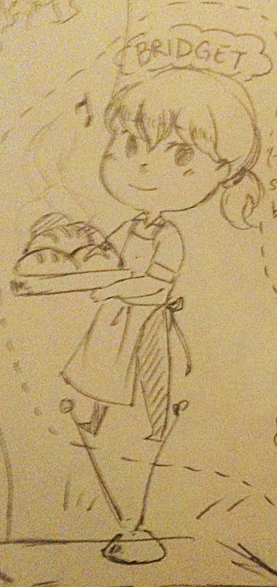
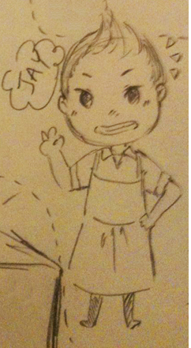
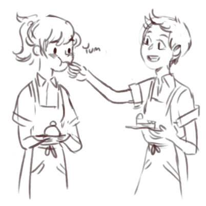

Bridget
"I-is that so?"
Name: Bridget
Age: 18
Height: 5'7" (170 cm)
Weight: about 150lbs (68kg)
Sexual orientation: gay
Likes: bread, quiet music, cheesy romantic dramas
Dislikes: having to pay bills, horror movies
Bridget is a fresh adult who, after being forced to get a job, finally manages to get one at a local bakery down the street from her house. A relatively friendly girl, she can become very shy when embarrassed. Once in a while she is a little bolder, and in those moments she can lose herself.
She is a little chubbier than Jay, and gets awkward about that sometimes, even though Jay doesn't think she's chubby at all. Sometimes she likes to dress up all nice, but most of the time she opts for comfort and modesty.
She comes from a pretty normal home, with an overworking father and a mother who worries too much about her. She has an older sister who hasn't moved out and lives in the attic, and her mother has become increasingly paranoid she will end up doing the same thing. Growing up, she never thought to question her sexuality until middle school, when she fell in love with her best friend. When she talked to her sister about it, she was able to become accepting of it and although she never came out or confessed to her friend, Bridget was quite calm in accepting her sexuality, but prefers not to talk about it. She has come out to her mom, but her dad has yet to know.
Jay is the second girl Bridget has gone out with. Despite that, she finds it difficult to take the initiative and feels a mixture of desire and pressure to express her feelings for Jay that can sometimes explode (which Jay hardly minds). Her fetish is girls in uniforms.
She sometimes wears her hair down, but wears it in a ponytail for work.
Jay
"Yahoo!"
Name: Jay
Age: 14
Height: 5'5" (165 cm)
Weight: about 110lbs (49kg)
Sexual orientation: what's that?
Likes: sweets, energy drinks, marathoning tv shows into the wee hours of the morning, jogging, baking
Dislikes: depressing stories, the heat, tests, and skirts
Jay is an energetic young girl who seems to always be moving. She goes out for daily jogs in the morning to wake herself up, and likes to live each day as though it existed separately. Despite eating almost constantly, she doesn't seem to gain weight (perhaps as a result of the running).
Her family runs the bakery she helps out in, and she puts school way behind everything else she does. Her grades are mediocre, but she manages to pull through. Jay's favorite part of the day is coming home to help out, and she plans to become a pastry chef when she grows up.
She hasn't given much thought to her sexuality, though when she thinks about it, she hasn't ever really fallen for or been interested in guys much (to her dad's relief). When she first met Bridget, she found her ridiculously beautiful and was unable to place her feelings until she talked to one of her close friends about it. Like Bridget, she seems to be at ease with her sexuality but doesn't bring it up a lot. She hasn't come out to her parents yet.
I did make her younger, mostly because age gap is the best and because why not? A genki fourteen year old is great and you can't deny it.
The Two of Them
Bridget + Jay
Both of them seem to have eased into their current relationship. Bridget fell in love with Jay, and Jay with Bridget, but neither really outright told the other until it slipped out from Bridget several months after they'd been working together. Bridget ran away, thinking she'd messed up, but found that Jay felt the same when they met the next day. Without thinking much about it, they decided to be together.
For the most part, Jay is the flirty one in the relationship, though many of the things she does she does without thinking very much, and Bridget often finds herself melting with how cute Jay is. Sometimes Bridget will take the initative, and they tease each other on occasion. With the age gap, Bridget does her best to hold back, but sometimes internally curses how defenseless Jay can be and how adorable she finds that.
For them, their relationship as friends hasn't changed much after deciding to date each other, and they find that they have the most fun when they're together regardless of if they are aware of the label of "lovers" or "friends." For them, that's alright.
AN: These two are ocs I made after talking with Eri. It was a silly idea to combine two things I love (bakeries and yuri) and I haven't really done much with it.